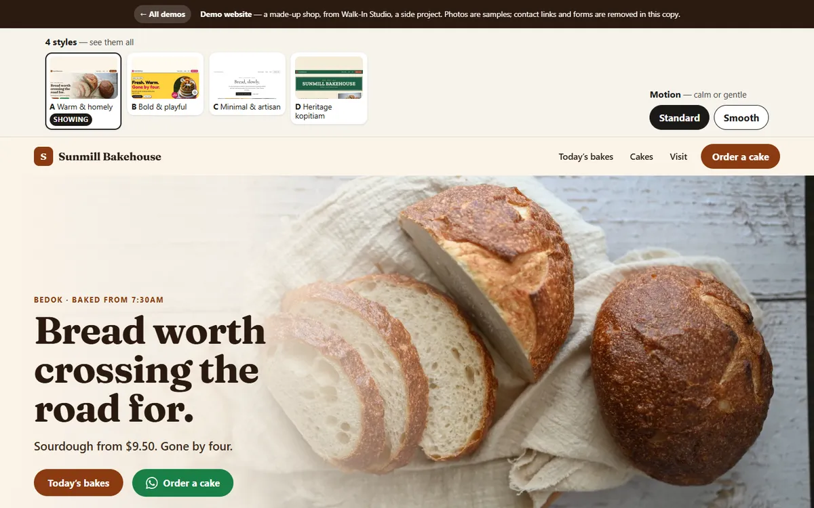
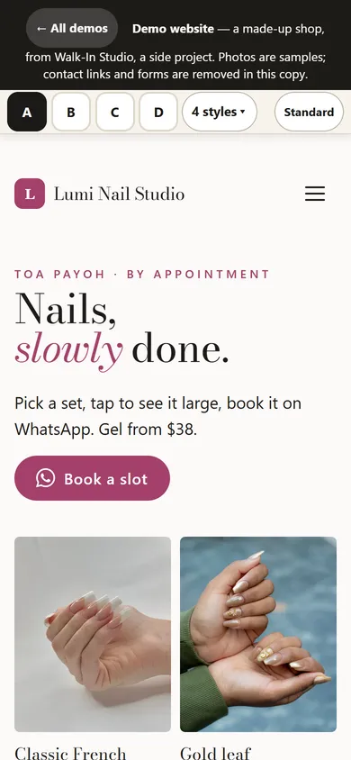
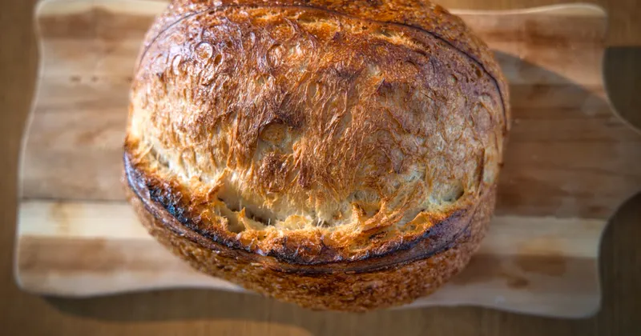
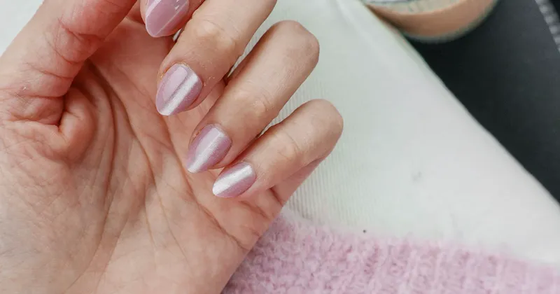
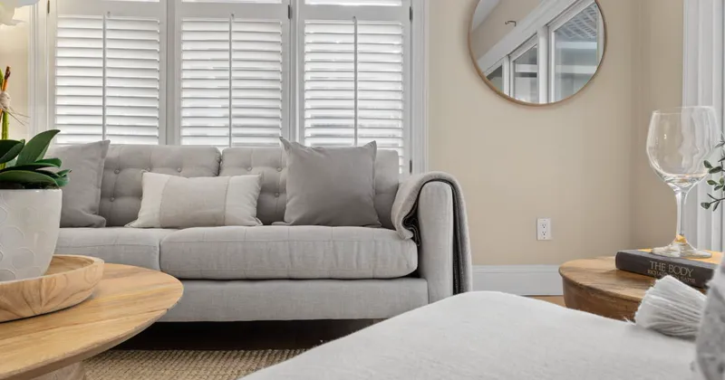
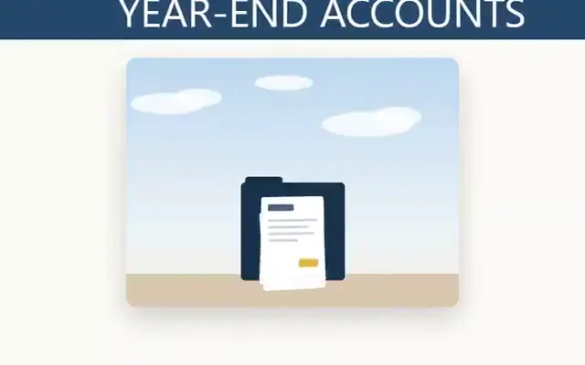
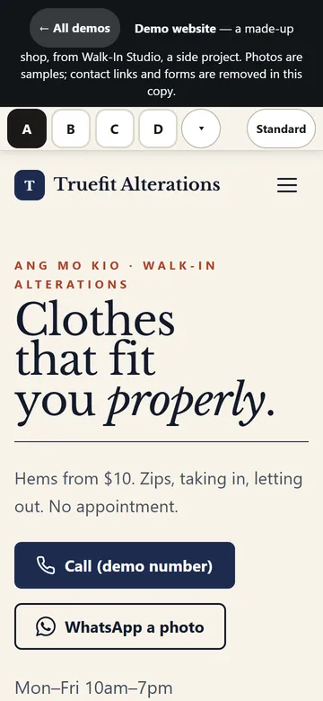
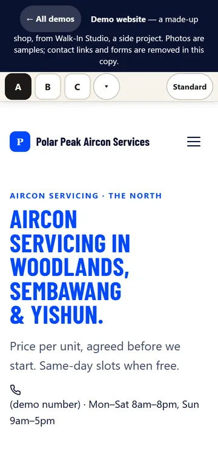
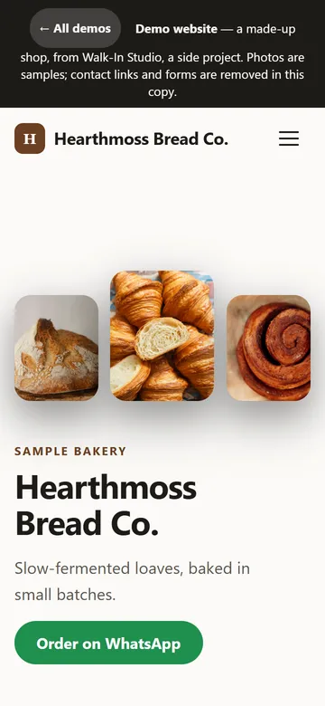
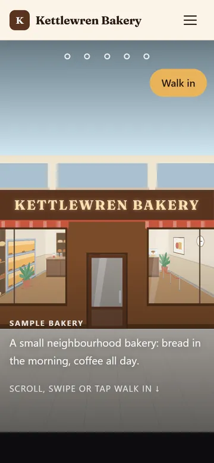

A side project · Archived Oct 2026
Shop websites you can walk into.
A design system and website templates for small shops, built for fun: bakeries, tailors, nail studios, aircon, restaurants, tuition and accounting. Seven trade kits, a library of demo sites for made-up shops, a scroll-driven walk-in hero and two motion styles, all checked by a quality harness.


What it shows
One design system, a layout for each trade.
-
A layout for each trade
A bakery menu board, a nail lookbook, an aircon price estimator, a tax-deadline helper: each built around what people look for at that kind of shop.
-
Phone first
Big buttons, fast pages, no zooming. Every page is checked at four screen sizes.
-
One-tap WhatsApp booking
The templates open WhatsApp with the message already written. In this copy those links are switched to plain text.
-
Maps and opening hours
Where the shop is, when it's open, and how to get there.
-
Walk-in hero
On the bakery demo, scrolling plays a walk from the street through the shop door.
-
A quality harness
Pages are screenshotted at four sizes and scored 1–5 on nine points by a blind review step, against reference sites.
Open them
The templates, and the Signature motion demos.



Signature Story-driven motion Sixteen demos: the product as the star, or a walk through the shop, for every trade. See the Signature demos →
Motion
Three kinds of motion, one switch.
Motion: Standard
Pages open instantly. Buttons and links react when you tap them; nothing slides or fades while you scroll. Calm and fast on any phone.
Motion: Smooth
Eased page-to-page transitions and gentle reveals as you scroll, tuned so nothing stutters or leaves a blank screen.
Motion: Signature
Story-driven motion made for one shop: the product travels through the page, or scrolling walks you through the door.
Every template has a Motion: Standard / Smooth switch at the top: open one and flip it.




Under the hood